Design and engineering under one roof.
I'm an Engineer in Digital Entertainment Design (UPB, Medellín) working across Game Designer and Unity Developer roles — I design systems and build them myself, which shortens the distance between "what if…" and a playable prototype. I've led multidisciplinary teams, reviewed design across a 7-title studio portfolio as a freelance designer, and built internal AI-assisted tooling (Claude + MCP) to speed up design documentation and review.
Systems over features
I prefer a few rules that interact over many isolated features. A good system creates more than one consequence.
Fast prototype, fast decision
Jams, one-week challenges, playable builds in days. Design questions get answered by playing, not debating.
AI as infrastructure, not autocomplete
I build workflows with Claude Code and MCP for documentation, review, and design memory — not just text generation.
El Ritual — when the cooldown becomes lethal
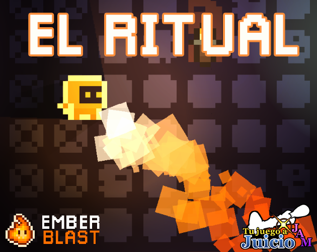
Unity · 2D Pixel Art · Game Jam 2021Magic is cursed: a spell can only be cast once every thirty years.
The player protects the masters of three magic schools — Fire, Ice, and Darkness — while they complete a forbidden ritual. Time crystals speed up spell reuse, but at the cost of aging the wizard in real time: one second of crystal time equals one year of life. Abusing the resource can literally kill the character of old age.
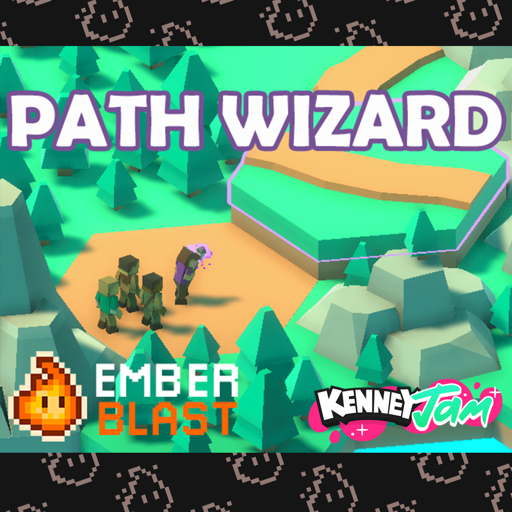
Unity · 3D · Kenney Jam 2021Path Wizard — you don't move the villager, you move the world
Same instinct as El Ritual, aimed at a different genre entirely. Instead of giving the player direct control over a character, Path Wizard hands them the terrain itself — rotate tiles, carve paths, teleport obstacles out of the way — and lets the villager find its own way through. The puzzle isn't movement, it's reshaping the space movement happens in.
8 prototypes, 8 different genres.
All free to play in-browser. Each card links straight to its itch.io page.
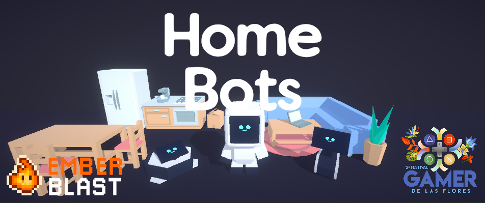
Home Bots
Role: solo design & Unity development
Draw routes for autonomous home robots; avoid collisions and reach the destination with the least damage possible.
El Ritual
Role: solo design & Unity development — game jam
2D action game where time is the resource: speeding up spells ages the wizard until death.
Path Wizard
Role: solo design & Unity development — game jam
A cozy wizard who reshapes terrain, teleports, and guides travelers to their destination without running out of mana.
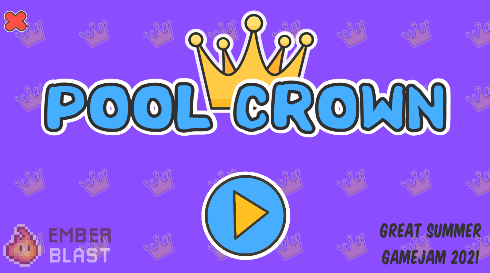
POOL CROWN
Role: solo design & Unity development — game jam
Survive 3 minutes without getting wet. One rule, instantly playable — no metagame required.
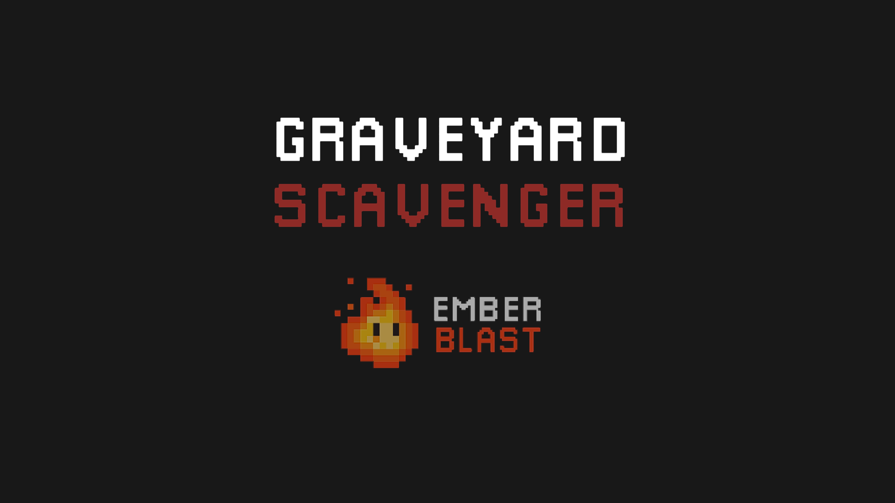
Graveyard Scavenger
Role: solo design & Unity development — game jam
Arrows exist in the world: pick them up off the ground or deflect them with your sword mid-combat.
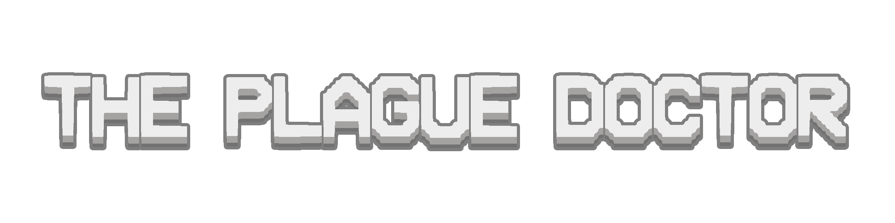
The Plague Doctor
Role: solo design & Unity development
A plague turns everyone it infects aggressive. The player is the doctor sent to contain it.
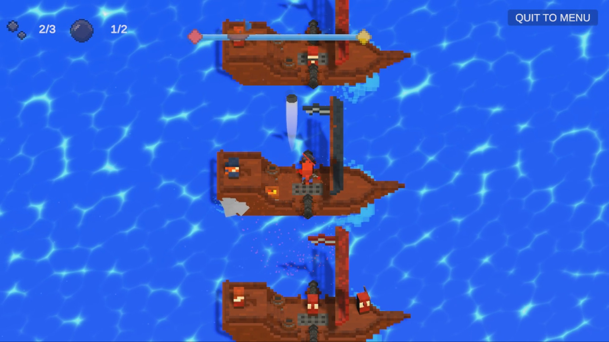
Sails of Freedom
Role: solo design & Unity development — 1-week challenge
3D voxel game made in one week (1 Game 1 Week): Katla escapes pirates alongside his brother.
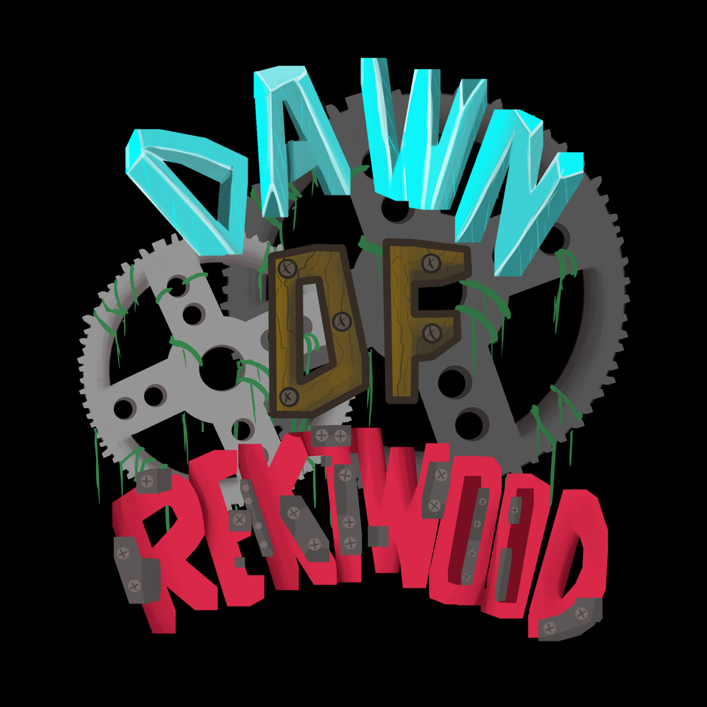
Dawn Of Rektwood
Role: game design & Unity development (team of 3 — 2 friends on graphics & animation)
2D tower defense: guardian spirits defend the Rektwood forest from a mechanical invasion.
Dabloons: Guild of Travellers
A cat, a guild, and a TikTok trend that asked for this exact game.
Guild of Travellers started from the "Dabloon Cat" trend on TikTok: you play a cat gathering Dabloons to upgrade your guild's base — a co-op roguelite built for the exact game that trend's audience was asking for. The Steam page is paid for and a wishlist landing page is in progress; development is on hold for now, but the devlogs below are real, and the build is 100% hand-coded in Unity/C# — built before AI-assisted workflows were part of how I work.
From small studios to technical leadership.
Founder & Indie Game Developer
2018 — PresentEnd-to-end production of 8 games for PC and mobile: design, programming, UI, build, and release. Grew a community of 20,000+ followers through devlogs.
Video Game Designer
Jun — Aug 2026Design review across an internal 7-title portfolio (strategy, roguelite, cozy sim, sci-fi, colony management). Designed and deployed an AI design assistant (Claude + MCP) integrated into Slack to speed up design documentation.
Interactive Software Developer — Unity
Jan 2025 — May 2026Development and maintenance of mobile and interactive apps in Unity/C#. Refactored legacy code, modular SOLID architecture, AI/MCP workflows integrated into the team's pipeline.
Level Designer
Jul — Aug 2024Designed and implemented campaign levels for Blaze of Empires (mobile), tuning pace and difficulty from playtest data.
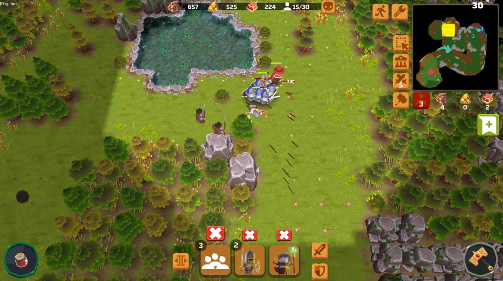
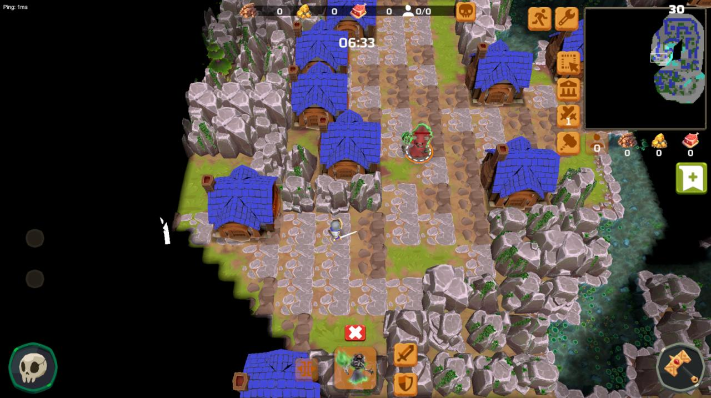
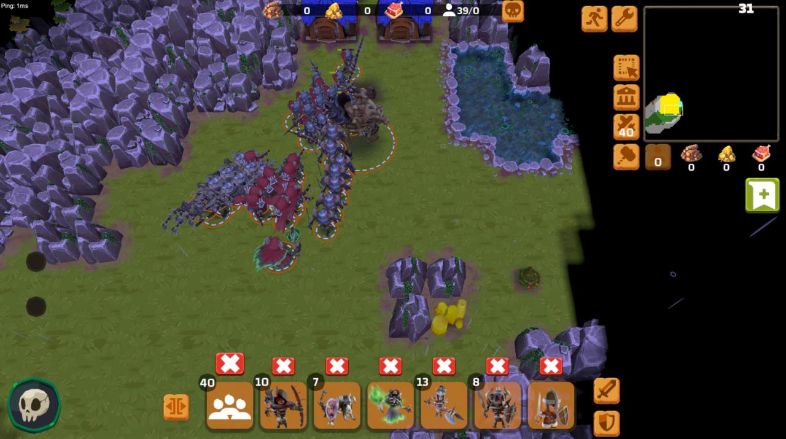
Campaign level design, end to end
Designed and implemented campaign levels using Unity and the studio's internal editor tooling — building gameplay scenarios tuned for pacing and difficulty progression across the campaign arc, then iterating on levels from playtest feedback.
Game Programmer
Jan 2023 — Feb 2024Playable prototypes and interactive systems in Unity; VR experiences in Unreal Engine 5 (Blueprints + C++). Technical documentation (GDDs/TDDs).
Video Game Team Lead
Feb — Dec 2022Led multidisciplinary teams (UI/UX, 2D/3D art, animation) across metaverse, blockchain, and real-time interactive projects.
Game Developer
2019 — 20223D educational RPG, mobile minigames for children, the arcade racer Eco Troopers Natural Racing, and VR experiences for HTC Vive — the foundation of 6 years designing and programming in Unity.
Tools & Skills
Design
- Game & Systems Design
- Economy & Progression Design
- Level Design
- Game Balancing
- Playtesting & Design Review
- GDD / TDD
Development
- Unity (URP, Addressables, ScriptableObjects, Animator, Timeline)
- Unreal Engine 5 (Blueprints, C++)
- C#, C++, TypeScript
- Mobile iOS/Android, WebGL, VR/XR (HTC Vive)
- SOLID, Modular Architecture
Production & AI
- Claude Code, MCP workflows
- Prompt engineering, LLM tooling
- Git/GitHub, Jira, Trello, Figma
- Scrum / Agile, team leadership
- Living technical documentation